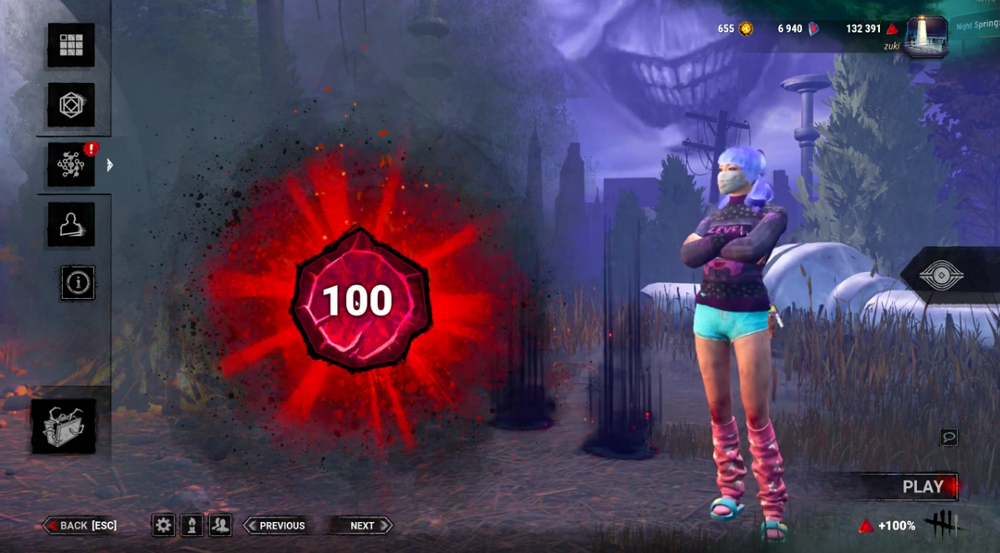
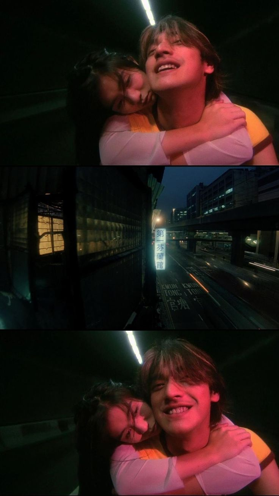
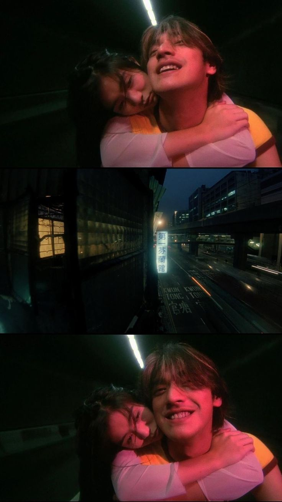

Front End Webpage

- Just a college student building a website about them and their interests. A few include gaming, listening to music, and watching films, but more on that later.
Hi everyone! I'm a second year college student studying to be a UI/UX designer. I'm 19, Mexican American, and queer. I'm a big boba lover and fan of surreal, immersive art, along with Instagram "hopecore" edits. Oftentimes they're quite inspiring and good at keeping me grounded and thankful for life and the beauty the mundane holds.

 
